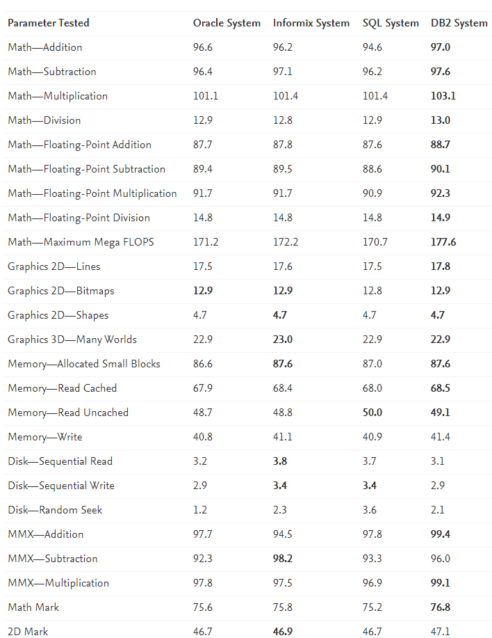

The PC computer architecture performance test utilized is comprised of 22 individual benchmark tests that are available in six test suites. The six different test suites test for the following: ▪ Integer and floating-point mathematical operations ▪ Tests of standard two-dimensional graphical functions ▪ Reading, writing, and seeking within disk files ▪ Memory allocation and access ▪ Tests of the MMX (multimedia extensions) in newer CPUs ▪ A test of the DirectX 3D graphics system The test results reported are shown as relative values. The larger the number the faster the computer. For example, a computer with a result of 40 can process roughly twice as much data as a computer with a result of 20. The Passmark rating is a weighted average of all the other test results and gives a single overall indication of the computer's performance. The bigger the number the faster the computer. The results we observed are shown in Table 14.2. 